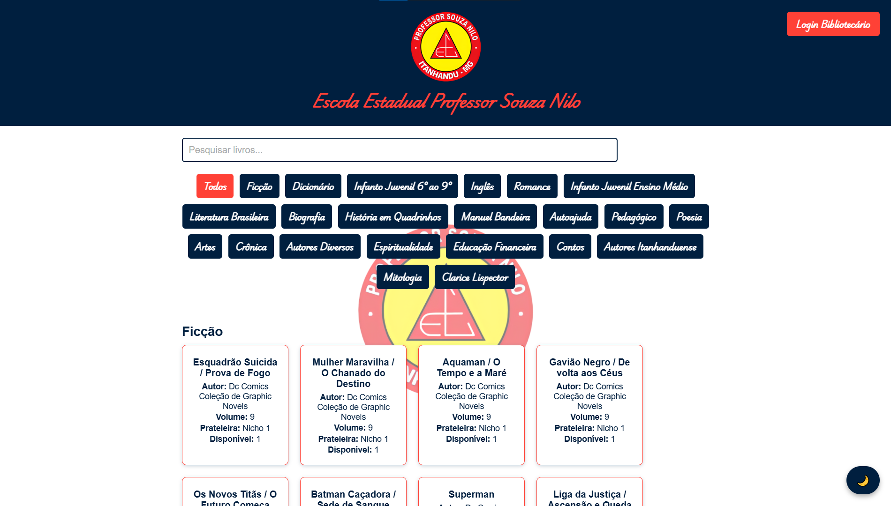

Olá, me chamoRichard Aghamenon
Eu
Falerei um pouco da Biblioteca Souza Nilo
Falerei um pouco da Biblioteca Souza Nilo
A Biblioteca Souza Nilo é um sistema web desenvolvido com foco na organização e modernização da biblioteca escolar. O projeto foi criado para facilitar o acesso à coleção de livros e otimizar o trabalho do bibliotecário por meio de uma plataforma simples, intuitiva e funcional.
O sistema é dividido em duas áreas principais: a área pública, voltada para alunos e visitantes, e o painel administrativo, exclusivo para o bibliotecário responsável pela gestão da biblioteca.
O painel administrativo centraliza todas as funcionalidades necessárias para o controle da biblioteca, permitindo ao bibliotecário(a) gerenciar o sistema de forma prática e eficiente.
A área pública do sistema permite a visualização de todos os livros registrados, organizados por gêneros, facilitando a consulta da coleção de livros e incentivando o acesso à leitura de forma rápida e acessível.
A Biblioteca Souza Nilo foi desenvolvida utilizando HTML, CSS e JavaScript, priorizando uma interface limpa, responsiva e de fácil utilização, aplicada a um contexto real de uma biblioteca escolar.
Fonte: https://meliodasbr-oficial.github.io/Biblioteca-Souza-Nilo/ Fonte: https://meliodasbr-oficial.github.io/Biblioteca-Souza-Nilo/